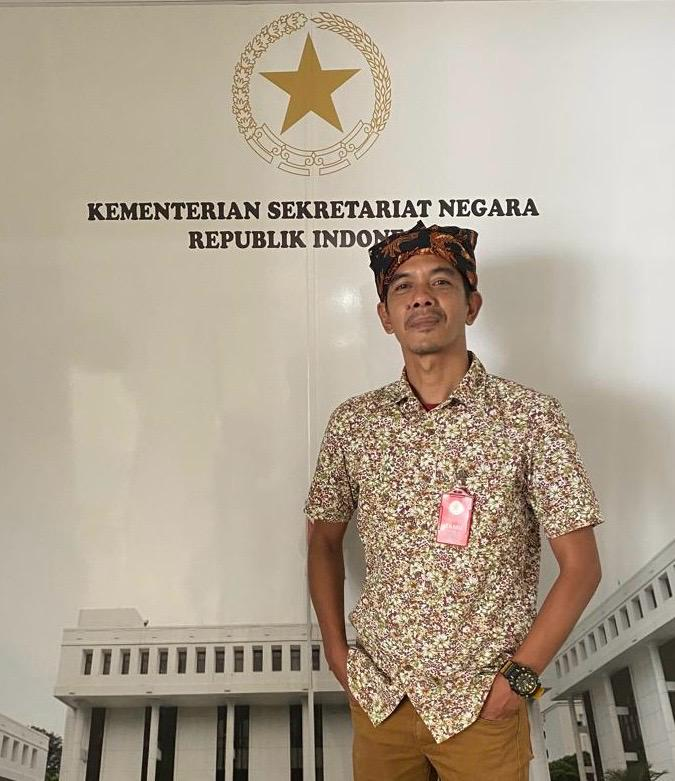

Petunjuk Visual
Notasi dan waktu bermain diterjemahkan ke dalam tampilan visual yang dapat diikuti saat peserta memainkan angklung secara individual maupun berkelompok.
01GALUNG atau Gawang Angklung adalah pendekatan pembelajaran musik berbasis visual yang membuka ruang partisipasi bermain angklung bagi Teman Tuli dan masyarakat luas.
Gawang Angklung
Belajar Ritme Bersama
Setiap orang berhak merasakan kebersamaan, ekspresi, dan kegembiraan melalui musik.
— Semangat GALUNG: Musik Tanpa BatasGALUNG merupakan singkatan dari Gawang Angklung, sebuah inovasi pembelajaran yang memadukan angklung tradisional dengan teknologi visual interaktif.
Dalam pembelajaran musik konvensional, bunyi sering menjadi pusat instruksi. GALUNG menawarkan jalur akses lain melalui tampilan warna, simbol, waktu, gerak visual, ritme, dan pengalaman bermain bersama. Pendekatan ini membantu peserta mengikuti momen kapan angklung perlu dimainkan secara lebih terstruktur.
Metode ini dirancang terutama untuk memperluas akses Teman Tuli dalam kegiatan musik angklung, tanpa menghilangkan nilai budaya, kebersamaan ansambel, maupun peran pendidik dalam proses belajar.
GALUNG mengedepankan interaksi visual dan pembelajaran bersama, sehingga musik dapat menjadi ruang ekspresi yang lebih aksesibel, menyenangkan, dan bermakna.
Notasi dan waktu bermain diterjemahkan ke dalam tampilan visual yang dapat diikuti saat peserta memainkan angklung secara individual maupun berkelompok.
01Peserta dilatih mengenali pola waktu, pergantian bagian lagu, serta momen memainkan angklung melalui sinyal yang tersinkron.
02Warna digunakan sebagai elemen bantu untuk membangun hubungan antara instruksi visual, nada angklung, dan koordinasi permainan.
03GALUNG mendukung suasana belajar bersama, karena setiap peserta dapat mengambil peran untuk membentuk harmoni dalam satu karya.
04Pendekatan ini menempatkan akses, partisipasi, dan rasa percaya diri sebagai bagian penting dari pengalaman belajar musik.
05Teknologi digunakan untuk memperluas cara masyarakat mengenal, memainkan, dan merayakan angklung sebagai warisan budaya.
06GALUNG membangun pengalaman belajar yang menekankan keterbacaan instruksi, koordinasi waktu, dan keterlibatan aktif dalam ansambel angklung.
Pelatih menyiapkan komposisi, pola ritme, atau lagu yang akan dimainkan sesuai tingkat pengalaman peserta.
Peserta memperhatikan warna, simbol, jalur, atau penanda waktu yang memberi informasi mengenai giliran memainkan angklung.
Ketika penanda visual mencapai titik permainan, peserta menggoyangkan angklung sesuai nada dan perannya dalam ansambel.
Proses latihan dilakukan berulang dan kolaboratif agar peserta dapat berkembang dalam ritme, koordinasi, ekspresi, serta kerja sama musikal.

Ardian Sumarwan, yang akrab disapa Kang Ari, dikenal sebagai inovator pembelajaran angklung dan pencipta metode GALUNG atau Gawang Angklung. Gagasannya lahir dari keyakinan bahwa musik tidak seharusnya memiliki batas akses.
Melalui perpaduan kreativitas, pendekatan visual, dan semangat inklusivitas, GALUNG membuka kesempatan bagi Teman Tuli untuk ikut memainkan angklung, berlatih ritme, berkolaborasi, serta tampil dalam pengalaman musik bersama.
Pengembangan GALUNG juga menegaskan bahwa teknologi dapat berfungsi sebagai jembatan: bukan menggantikan manusia dan pendidik, tetapi memperluas cara belajar agar lebih setara dan partisipatif.
GALUNG membawa perspektif bahwa pembelajaran seni dapat dirancang lebih adaptif terhadap kebutuhan peserta didik, sekaligus tetap berakar pada identitas budaya lokal.
Mendorong lebih banyak orang untuk mengambil bagian dalam kegiatan musik angklung tanpa membatasi pengalaman pada kemampuan mendengar.
Memberi ruang bagi peserta untuk tampil, berkreasi, dan merasa memiliki peran yang bermakna dalam sebuah ansambel.
Menghadirkan angklung sebagai media perjumpaan antara peserta, guru, keluarga, komunitas, dan masyarakat yang lebih inklusif.
Terbuka untuk kolaborasi pendidikan, workshop, pelatihan angklung, kegiatan komunitas, riset, serta pengembangan ekosistem musik yang dapat diakses oleh lebih banyak orang.